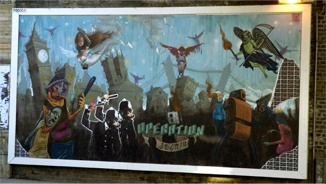

|
|
|
||
|
Successful Broadcasts
View the content that's already gone out thanks to the community! |
||||||||||||||||||||
We weren't lying. You have a voice. Defending America … one country at a time This mural, by a team of up and coming street artists, went up in LA at the corner of Melrose and Ogden. The thing is huge, almost 20 x 60, a sprawling history of America's military overtures in Canada, Cuba, Nicaragua, the Philippines, etc. etc. Some people wondered about painting the piece across the street from a high school. I don't know. Since those kids are the ones who will be drafted if our trigger fingers get itchy enough, it seems like about the perfect place to me.  This is a picture of a mural we arranged to put up in London, England, before it was stolen. Besides being incredibly cool to look at, it was inspired by some scary shit on the web. There are a growing number of artists and scientist I know who have had someone tip them off to a series of very disturbing URLs. Maybe you see your name in one, or a bit of a painting, or you find a fragment of a lyric that you haven't even recorded yet, and it makes you sit up and take notice. Look, we all know this but we don't KNOW this: if we don't get off our asses, in fifteen years this might be a world none of us wants to live in. |
||||||||||||||||||||
 |
|||